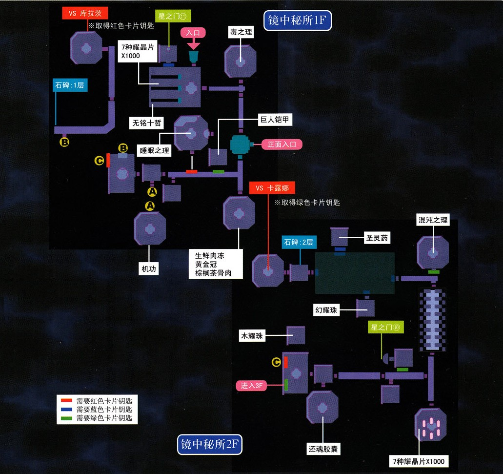
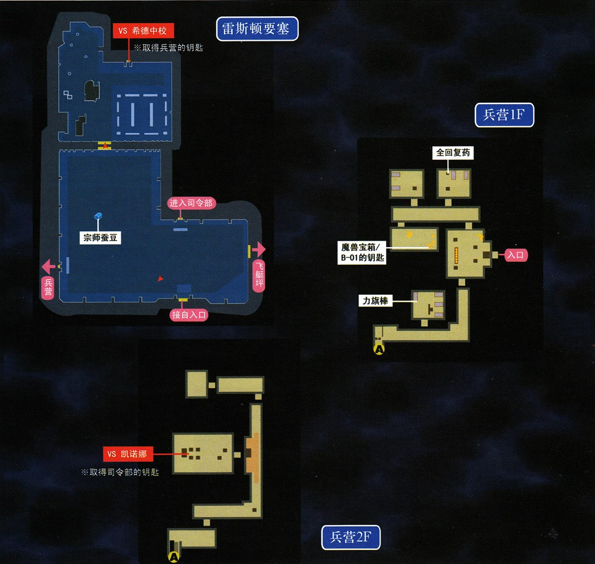
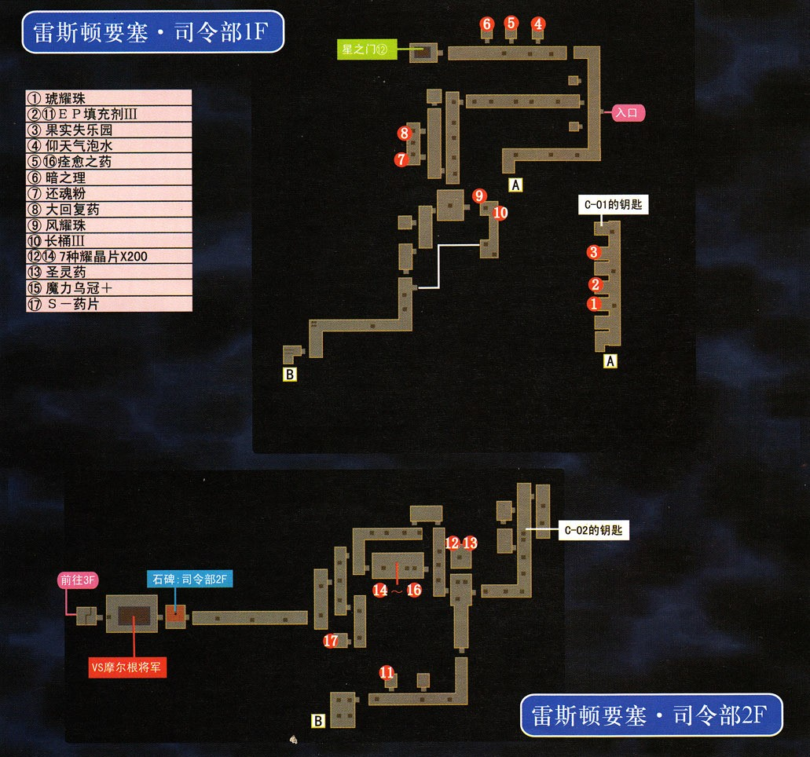
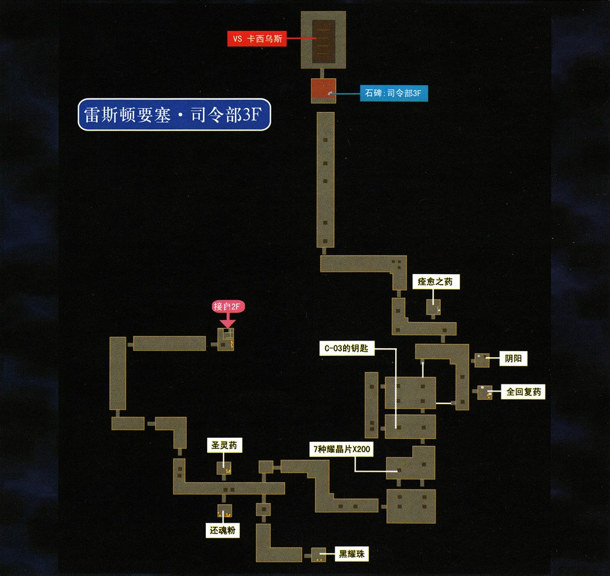
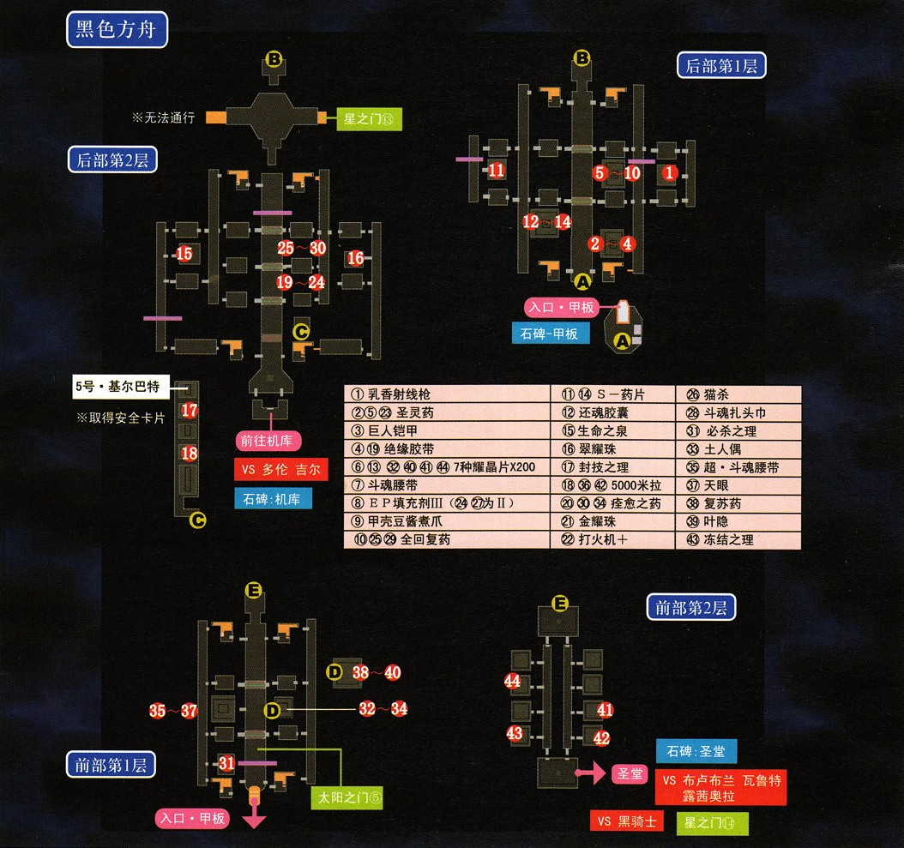

第六话 守护者的试炼
☆本话开始到琥耀之门解放，在书库会获得肉体改造轮（与书架前雪拉对话）；开始到红耀之门解放前，在书库内获得书籍《人偶骑士》☆
本话开始时，如果之前通过继承存档获得过塞姆里亚石的话，现在跟塞雷斯托对话就可以制作最终武器了，没有继承存档的同学只能等到终章到深渊探险之后才能获得4个塞姆里亚石了。对于PSP玩家来说从现在开始，大树下开始出售魔兽系列食材，每个价格400mira。
一般来说，这时候即使是见怪就躲的玩家的战斗次数也应该到了100次了，星之门②能够进入了。
【星之门②】关于"盐之桩"的调查报告。奖励3500mira和石化之刃。
本话主迷宫是艾尔贝周游道，杰尼斯王立学院、湖畔研究所、雷斯顿要塞、古罗力亚斯等熟悉的场景也将出现，同时还要与很多FC、SC中或敌或友的角色们战斗，可以说3rd一半的精彩战斗都集中在本话。
第一部分-无色学院

把科洛丝带上，经过第五话BOSS战那里的传送阵进入艾尔贝周游道。直接去西北方的苍耀之门，队伍中必须有科洛丝才能进入，进去之后就到了杰尼斯王立学院。校园内没有了颜色，现在的任务就是打倒全部黑色骑士以恢复校园的颜色，注意不能攻击彩色骑士，一旦攻击的话黑色骑士会复活= =王立学院校园、主楼、男女宿舍、礼堂、社团大楼都要变回彩色，继续前行的路才会打开。注意校园的黑色骑士有的隐藏的很深，必须仔细寻找才能找到。都变回之后从后门出去，路上会遇到渡鸦帮三人组（如果带阿加特的话对话稍有不同），战斗难度不大，注意一下敌方HP较少时发动的带有即死效果的"蚀杀一击"。星之门⑨能进入了
【星之门⑨】进入条件比较诡异，要求交出50000mira，这个很值的，因为这个门结束之后的奖励是100000mira。主题是柏斯市长与女仆莉拉的一段小故事。奖励100000mira和攻击料理流血肉丸子。
继续向旧校舍前进，前方等着我们的是一个强大的BOSS——曾经以一人之力阻挡四位执行者的利贝尔王室亲卫队前任大队长菲利普，此人一开场会使用强大而又华丽的S技翠耀之心，注意回复，并使用全屏S技和全屏魔法尽快清除周围的四个小怪，之后全力攻击即可，此战如果菲利普从一开始就不断使用S技，那么恭喜你使用的是第一代中文版3rd(俗名教育版3rd)，请到空之轨迹吧下载补丁修好这个BUG。战斗后搜刮一下旧校舍，并发现月之门⑤。
【月之门⑤】进入条件是手中有回路"幸运"（在训练场宿舍二楼宝箱内得到，当然如果你有卖回路的习惯的话我无话可说= =）奖励12000mira，饰品幸运之石。 点击查看更多
第二部分-镜中秘所

{kind=link}
(图中一层的7种耀晶片各1000需要调查图示位置的传送带获得)回到据点，把亚妮拉丝带上，经过琥耀之门进入下一个地点——湖畔研究所。这次的地图与SC的研究所正好是镜像分布的。进入建筑之后马上进入强制战斗，敌人反射魔法攻击。这次的建筑同样有三个卡片，用特定的卡片会打开特定的门。继续前进到1F深处进行第一场BOSS战，注意防止气绝即可。2F终点的对手是卡露娜，同样要防止气绝。3F对手是克鲁茨，注意回复即可。三战后获得三个卡片，这时出发把所有的验证门都打开吧。下面的对手很强大，建议所有参战队员等级都升到120级。这名BOSS是雾香，如果有肉搏系队员尽量冲上去跟她贴身近战，同时注意回复。雾香的S技伤害相当惊人，被攻击后必须立刻回复。
{kind=link}
【星之门10】镜中秘所二层就有这个门，主角是玲，进入后有剧情战，敌人会毒、石化、黑暗。胜利后会看到帕蒂尔·玛蒂尔的调查报告，奖励10000mira，此后带着玲回到据点之后就会发生剧情，玲学会新的S技帕蒂尔玛蒂尔。
【星之门11】在镜中秘所一层，进入后有战斗敌人会反射魔法，死亡时自爆，最好的办法是用全屏S技直接解决。之后会看到关于怪盗B的调查报告。奖励10000mira和饰品怪盗斗篷。
镜中秘所的宝箱里能够拿到一个"里·武术大会参加许可证"，这个是进入太阳之门③困难难度的凭证。
【太阳之门③ 里·武术大会】（困难难度）还是三连战，现在可以不带金就能进入了，所以组建自己的最强的队伍来挑战吧。胜利后获得10000mira和灵之理（回路，装备者受到的魔法攻击伤害减少，物理攻击伤害增加）。
☆从琥耀之门解放到第七话进入礼拜堂，任意时间在大树下的书架会获得三本难懂的书（实录·百日战役、卢安经济史、结晶光学论文集）☆
第三部分-铁壁要塞

{kind=link}
回据点把理查德带上。在周游道打开红耀之门，进入雷斯顿要塞。要塞目前只能进入研究楼内，刚一进入就要跟希德中校作战。希德在SC已经跟我方对战过了，此次再来，貌似还是没有太大进步，虽然物理攻击力很高，但是驱动大魔法的时间仍然很长，注意打断，一定不能让他放出全屏魔法。此战注意防冻结。
战斗后拿到兵营钥匙，进入兵营。兵营内有全游戏唯一一个魔兽宝箱，拿到B-01钥匙。接着前往南边跟凯诺娜作战，此战特务兵的威胁很大，建议优先清除。战斗后获得司令部钥匙，进入司令部。司令部1F有星门12，正好理查德在队，直接进去即可。
【星之门12】讲的是理查德离开军队之后在卢安的一段故事。奖励10000mira和回路谍报。

图中的两个钥匙是继续前进必须的道具，一定要先拿到。2F终点有石碑，继续前进发生BOSS战，对手摩尔根将军。摩尔根将军攻击带气绝，一定要注意。此战可以使用时间加速·改和时间减速，可以有效提高战斗效率。

战斗胜利后就可以继续前进了。玩家大概也能猜到下一个对手是谁了，注意必须让参战队员的等级达到120，并且调整好装备和回路，下一个对手不会使用异常状态攻击。
BOSS战对手是卡西乌斯单枪匹马作战，每一名可控角色都和他有着或多或少的联系，因此可以带不同的队员来跟卡西乌斯看到不同的对话。卡西乌斯的普通攻击就有很高的伤害，S技与其它战技也都有着恐怖的实力，因此这场战斗开始阶段建议用星杯领域防守，后面专门一个队员负责补墙，让理查德担任主力，连续使用光鬼斩就能比较容易的获胜了。战斗后不要着急离开，雷斯顿要塞的飞艇坪现在可以进入了，里面有宝贵的回复CP饰品——超斗魂腰带和超斗魂扎头巾。
第四部分-黑色方舟

回到据点把约修亚加入队伍，前往艾尔贝周游道开启最后一个门——黑曜之门，就来到了古罗力亚斯。按照图中A-B-C-D-E的顺序走，注意收集沿途的宝箱和调查星门13、太阳之门⑤，到了C点先去救基尔巴特拿到最新的安全卡片之后再前往机库。机库内发生BOSS战，敌方会用黑暗状态的攻击，注意防御。战斗胜利后乔斯特的S技"山猫号"会得到强化（无论她是否在队都能强化。之前如果没通过太阳之门①学会山猫号的话这里会直接学会山猫号II）。继续前进将会同时面对三位执行者，做好准备吧。首要防止的异常状态是气绝。
{kind=link}
三位执行者作战方法不一样，建议先打会多种异常状态攻击的布鲁布兰，再打会用回复魔法的露西奥拉，最后解决瓦鲁特，注意每个敌人都会S技（开场最好放星杯领域，瓦鲁特第一次出手就会使用S技），因此一定要注意随时回复。由于部分队员跟三位执行者有着很深的关系，科洛丝、奥利维尔、金、雪拉扎德在队会有不同的对话。战斗后进过传送阵进入第六话BOSS战，请做好防护气绝、冻结、混乱的准备。黑骑士战斗方法跟FC和SC的莱维区别不大，建议先打死旁边的D·幻影，之后再跟黑骑士和分身（最多两个）作战。唯一需要注意的就是不要让驱动中的回复被打断。没必要攻击分身，分身即使打死了也会继续召唤，因此只需要全力攻击本体即可。战斗胜利后传送阵变成了星门14（目前进不去）。艾尔贝离宫的结界解除。第六话结束。